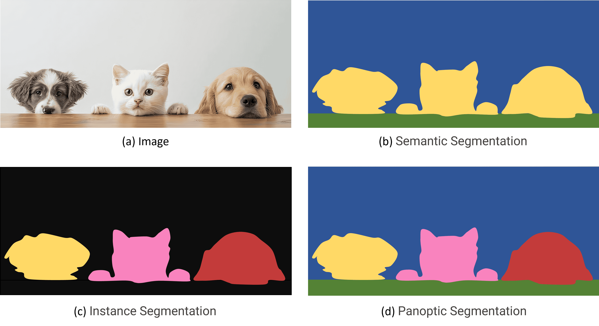
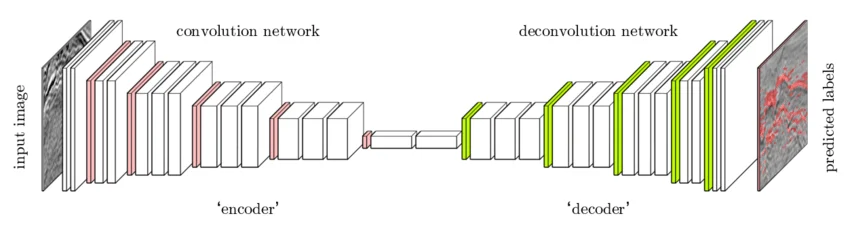
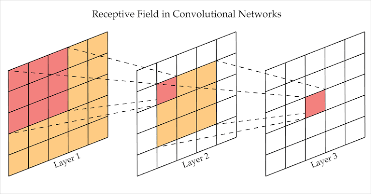
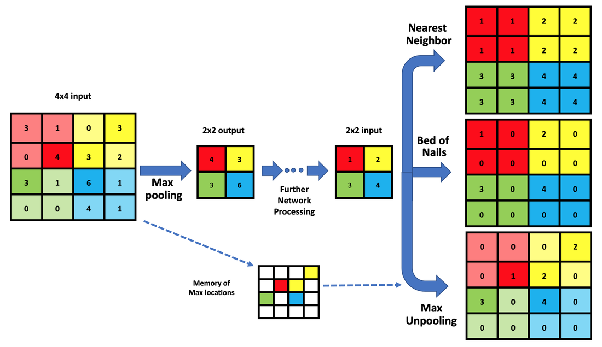
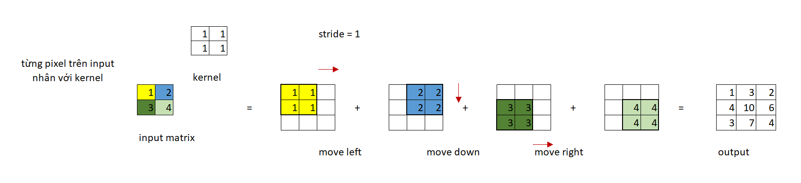
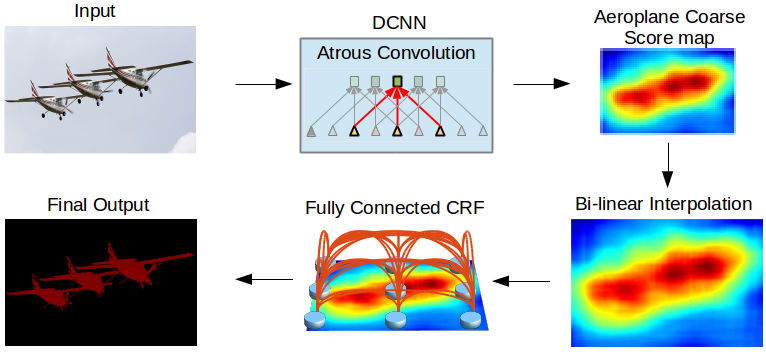
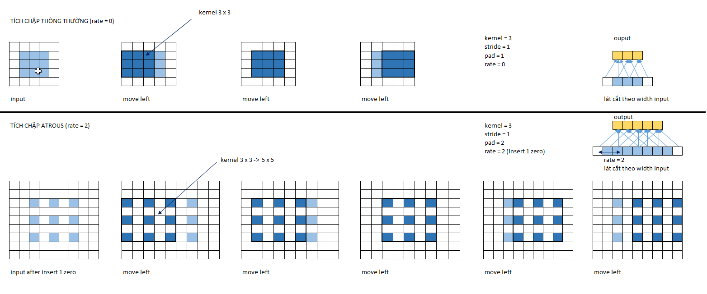
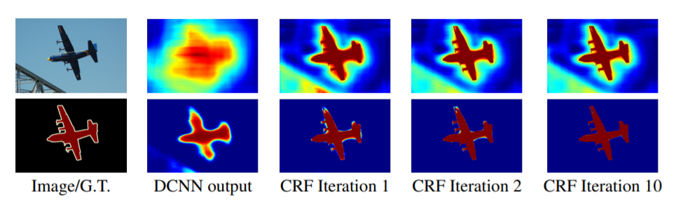

I. BÀI TOÁN IMAGE SEGMENTATION LÀ GÌ?
Nếu như Image Classification chỉ trả lời câu hỏi "bức ảnh này chứa cái gì?" (một nhãn duy nhất cho toàn ảnh), và Object Detection trả lời "đối tượng nằm ở đâu?" (một bounding box cho mỗi đối tượng), thì Image Segmentation (phân vùng ảnh) đi xa hơn một bước: nó trả lời câu hỏi "từng pixel trong ảnh này thuộc về đối tượng nào?".
Nói cách khác, thay vì dự đoán một nhãn cho toàn ảnh hay một hình chữ nhật bao quanh đối tượng, segmentation gán nhãn cho từng pixel trong ảnh. Đây là bài toán ở mức fine-grained (chi tiết mịn) nhất trong ba bài toán thị giác máy tính cơ bản.
1. Đầu vào và đầu ra
Image Segmentation nếu được huấn luyện theo bài toán học có giám sát trong thị giác máy tính thì sẽ yêu cầu gán nhãn cho ảnh. Input của bài toán là một bức ảnh và output là một ma trận mask mà giá trị của từng pixel đã được gãn nhãn trên đó.
Hình 1: Input (bên trái) và Output (bên phải) của mô hình Image Segmentation đối với bài toán một đối tượng.

2. Các dạng image segmentation
Có ba dạng segmentation chính, phân biệt bởi mức độ chi tiết của đầu ra:
Trước hết chúng ta cùng tìm hiểu về 2 khái niệm rất quan trọng trong bài toán này là đối tượng thing và đối tượng stuff. Thing là chỉ các đối tượng trong 1 bức ảnh có thể đếm được (Xe cộ, chó, mèo, ....) , stuff là chỉ các đối tượng mà không thể đếm được ( Mây, nước, cỏ,.......)
- Semantic Segmentation (phân vùng ngữ nghĩa): Bài toán này sẽ tập chung giải quyết đối tượng stuff trong ảnh
- Instance Segmentation (phân vùng thực thể): Bài toán này sẽ tập chung giải quyết đối tượng thing trong ảnh
- Panoptic Segmentation: Bài toán này sẽ giải quyết cả 2 đối tượng thing và stuff.
Hình 2: so sánh Semantic Segmentation và Instance Segmentation, Panoptic Segmentation

II. KIẾN TRÚC CỦA MÔ HÌNH IMAGE SEGMENTATION
Các thuật ngữ trong image segmentation.
- Upsampling: Các kỹ thuật giúp tăng kích thước output trong mạng CNN.
- Tích chập chuyển vị (Conv2DTranspose hoặc Transposed Conv2D): Một dạng tích chập giúp gia tăng kích thước của mạng CNN.
- Mạng giải chập (DeconvNet hoặc Deconvolutional Neural Network): Là một mạng áp dụng liên tiếp quá trình Upsampling để giải mã ngược trở lại từ đặc trưng sang ảnh. Thường áp dụng trong các bài toán Image2Image.
- Vùng nhận thức (Receptive Field): Là những vùng ảnh được áp dụng tích tập với bộ lọc để tạo ra các pixel ở output.
- Ma trận giãn nở (Dilation Matrix): Là ma trận được tạo thành từ ma trận gốc bằng cách padding xen kẽ các dòng và cột bằng giá trị 0.
1. Encoder–Decoder
Kiến trúc này gồm hai phần:
- Encoder (bộ mã hóa): là một mạng CNN tiêu chuẩn (như ResNet, VGG) có nhiệm vụ trích xuất đặc trưng. Qua mỗi lớp convolution + pooling, kích thước không gian giảm dần nhưng số kênh tăng lên.
- Decoder (bộ giải mã): có nhiệm vụ khôi phục lại độ phân giải không gian. Qua mỗi lớp upsampling hoặc transposed convolution, kích thước không gian tăng dần: Đầu ra cuối cùng có cùng kích thước với ảnh gốc, với số kênh bằng số lớp \(C\).
Hình 3: kiến trúc Encoder–Decoder tổng quát cho segmentation.

Vấn đề lớn nhất của kiến trúc này là mất mát thông tin không gian. Khi encoder giảm chiều, các chi tiết nhỏ như biên đối tượng, cạnh, góc bị mất đi. Decoder chỉ có thể khôi phục "đại khái" chứ không thể tái tạo chính xác biên.
2. Skip connections
Để giải quyết vấn đề mất thông tin không gian khi thực hiên encoder , người ta thêm các skip connection – kết nối trực tiếp từ encoder sang decoder ở các tầng có cùng độ phân giải. Nhờ đó, decoder vừa có thông tin ngữ nghĩa (từ tầng sâu) vừa có thông tin không gian chi tiết (từ tầng nông).
Skip connection quan trọng là vì Trong segmentation, thông tin "cái gì" (what) và "ở đâu" (where) đều cần thiết. Tầng sâu cho biết "đây là con mèo", nhưng tầng nông mới cho biết chính xác "pixel nào là rìa tai mèo". Skip connection kết hợp cả hai, giúp biên segmentation sắc nét hơn rất nhiều.
3. Vùng nhận thức (Receptive Field)
Vùng nhận thức (receptive field) là một trong những khái niệm nền tảng và quan trọng nhất của mạng tích chập, đặc biệt là trong các bài toán Image Segmentation. Hiểu đúng về receptive field giúp ta lý giải được vì sao mô hình có thể "nhìn thấy" được bối cảnh rộng lớn xung quanh một pixel, và tại sao các kiến trúc như atrous convolution hay ASPP lại cần thiết.
a) Định nghĩa
Vùng nhận thức của một pixel trên output là tập hợp tất cả các pixel trên ảnh input có đóng góp vào giá trị của pixel output đó. Nói cách khác, đó là "tầm nhìn" của một neuron trên output – vùng ảnh mà nó có thể "nhìn thấy" để đưa ra dự đoán.
Trong mạng CNN, receptive field tăng dần qua từng lớp convolution và pooling. Một pixel ở tầng càng sâu sẽ có receptive field càng lớn, nghĩa là nó tổng hợp được thông tin từ một vùng ảnh càng rộng ở input.
Hình 4: Minh họa vùng nhận thức của một pixel qua các lớp convolution liên tiếp.

b) Công thức tính receptive field
Gọi \(r_n\) là kích thước receptive field tại lớp thứ \(n\), \(k_n\) là kernel size của lớp đó. Công thức truy hồi để tính receptive field qua các lớp như sau:
Trong đó \(s_i\) là stride của lớp thứ \(i\). Với lớp đầu tiên, \(r_0 = 1\).
Nếu chỉ có convolution với stride \(s\) và kernel \(k\) lặp lại \(n\) lần, công thức có thể viết gọn lại thành:
Ví dụ: với 3 lớp convolution \(3 \times 3\) liên tiếp (stride 1), receptive field tại lớp cuối là \(1 + 3 \cdot (3 - 1) = 7\). Nghĩa là một pixel output "nhìn thấy" một vùng \(7 \times 7\) pixel ở input.
Khi có thêm pooling với stride 2, receptive field sẽ tăng nhanh hơn nhiều. Ví dụ với 2 lớp conv \(3 \times 3\) + 1 lớp max pooling \(2 \times 2\), receptive field có thể lên tới \(7 \times 7\) chỉ sau 3 lớp.
Quan sát quan trọng: Pooling và stride giúp tăng receptive field rất nhanh, nhưng đồng thời làm giảm độ phân giải feature map. Đây chính là trade-off cốt lõi trong thiết kế mạng segmentation: muốn receptive field lớn để nắm bắt bối cảnh, nhưng cũng muốn giữ độ phân giải cao để dự đoán chính xác từng pixel.
c) Vì sao receptive field quan trọng trong segmentation?
Trong bài toán Image Segmentation, mỗi pixel output cần được gán nhãn dựa trên cả thông tin cục bộ (màu sắc, cạnh, texture xung quanh) lẫn thông tin ngữ cảnh (vật thể này là gì, nó nằm trong bối cảnh nào). Receptive field chính là cơ chế để mạng "nhìn thấy" đủ ngữ cảnh cần thiết.
- Nếu receptive field quá nhỏ, mô hình chỉ nhìn thấy một vùng ảnh hẹp, dễ nhầm lẫn giữa các vùng có texture tương tự nhau (ví dụ: mặt đường nhựa và mặt nước đều có màu xám tương tự).
- Nếu receptive field quá lớn, mô hình có thể nắm bắt bối cảnh tốt hơn nhưng lại dễ bị "nhòe" thông tin chi tiết, khiến biên segmentation kém sắc nét.
- Vì vậy, các kiến trúc segmentation hiện đại thường kết hợp nhiều nhánh với receptive field khác nhau – đây chính là ý tưởng của ASPP trong DeepLab.
III. MẠNG GIẢI CHẬP (DECONVOLUTION NETWORK)
Bạn hình dung các mạng CNN thông thường sẽ có kích thước giảm dần qua các layers để cuối cùng chúng ta thu được những đặc trưng bậc cao (high-level). Chức năng chính của CNN là chuyển từ ảnh sang đặc trưng. Vậy nếu muốn chuyển từ đặc trưng sang ảnh chúng ta sẽ cần thực hiện như thế nào?
Mạng giải chập sẽ giúp chúng ta thực hiện điều đó. Một mạng giải chập sẽ có kiến trúc chung là shape của các layers tăng dần. Qua từng layer mạng sẽ giải mã các khối đặc trưng thành những thông tin không gian của từng điểm ảnh và tạo thành một bức ảnh mới ở output.
Qúa trình gia tăng kích thước tại các layers của mạng giải chập còn được gọi là Upsampling. Trong các bài toán classification và object detection dường như là chúng ta không sử dụng mạng giải chập bởi output của những bài toán này là xác định nhãn hoặc vị trí. Thế nhưng đối với các bài toán Image2Image (đầu vào là ảnh và trả ra output cũng là ảnh), chúng ta thường xuyên bắt gặp mạng giải chập và các layer có tác dụng Upsampling như Transposed Convolution, Dilation Convolution, Upsampling 2D.
Hình 5: Mạng tích chập (Convolutional Neural Network) kết hợp với giải chập ( Deconvolutonal Neural Network) trong các bài toán ImageSegmentation..
Nhánh bên trái của một mạng Segmentation là một CNN có nhiệm vụ như một encoder để tạo đặc trưng. Nhánh bên phải làm nhiệm vụ như một decoder giúp giải mã các features sang ảnh dự báo. Như vậy decoder sẽ làm nhiệm vụ ngược lại của encoder.
IV. UPSAMPLING
Upsampling là phép toán tăng kích thước không gian của feature map mà không học tham số. Có nhiều phương pháp upsampling khác nhau:
1. Nearest neighbor
Phương pháp đơn giản nhất: mỗi pixel mới được gán giá trị bằng pixel gần nhất trong ảnh gốc. Nếu tăng gấp đôi kích thước, mỗi pixel cũ được nhân bản thành \(2 \times 2\) pixel.
Ưu điểm: nhanh, đơn giản. Nhược điểm: tạo ra các khối vuông (blocky) rõ rệt, không mượt.
2. Bilinear interpolation
Mỗi pixel mới được tính bằng trung bình có trọng số của 4 pixel gần nhất trong ảnh gốc, với trọng số tỉ lệ nghịch với khoảng cách.
Trong đó \(w_{ij}\) là trọng số dựa trên khoảng cách từ \((x, y)\) đến pixel \((x_i, y_j)\). Bilinear cho kết quả mượt hơn nearest neighbor nhưng vẫn có thể làm mờ biên.
3. Max unpooling
Trong lúc encoder thực hiện max pooling, ta lưu lại vị trí (index) của giá trị max. Khi decoder cần unpooling, ta đặt giá trị vào đúng vị trí đã lưu, các vị trí còn lại gán bằng 0.
Hình 6: so sánh Nearest Neighbor, Bilinear và Max Unpooling.

Lưu ý: upsampling thuần túy (nearest, bilinear) không có tham số học được. Trong nhiều kiến trúc, người ta kết hợp upsampling với convolution để vừa tăng kích thước vừa học được đặc trưng mới. Tuy nhiên, cách này thường cho kết quả kém hơn transposed convolution vì kernel được áp lên feature map đã bị nội suy.
V. TÍCH CHẬP CHUYỂN VỊ (TRANSPOSED CONVOLUTION)
Ngoài việc gia tăng kích thước thông qua upsampling, chúng ta có thể thực hiện theo cách phức tạp hơn thông qua tích chập chuyển vị (Transposed Convolution hoặc Conv2DTranspose). Vai trò của tích chập chuyển vị xuất phát từ nhu cầu biến đổi theo quá trình ngược lại của mạng tích chập thông thường hay còn gọi là giải chập (Deconvolutional Neural Network). Giả sử từ ma trận đầu vào có kích thước \((w_1, h_1)\) sau khi áp dụng phép tích chập thông thường ta thu được kích thước \((w_2, h_2)\). Tích chập chuyển vị sẽ biến đổi từ một ma trận có kích thước \((w_2, h_2)\) của output sang ma trận có kích thước \((w_1, h_1)\) của input trong khi vẫn duy trì được các kiểu kết nối phù hợp với tích chập.
Bạn đọc sẽ dễ dàng hình dung hơn về tích chập chuyển vị qua ví dụ minh họa bên dưới:
Hình 7: Minh họa quá trình tính tích chập chuyển vị với input \(2 \times 2\), kernel \(2 \times 2\), stride 1.

CÁCH TÍNH TÍCH CHẬP
Ta di chuyển các pixel của ma trận đầu vào từ trái qua phải và từ trên xuống dưới. Sau đó lấy giá trị của pixel nhân với ma trận bộ lọc sẽ thu được ma trận output có kích thước tương đương. Tùy vào stride qui định là bao nhiêu mà ta sẽ di chuyển kết quả của mỗi lần nhân pixel với bộ lọc sang bấy nhiêu đơn vị. Sau cùng ta tính tổng các vị trí tương ứng của các ma trận kết quả để thu được ma trận chuyển vị. Trong trường hợp stride không bằng kích thước kernel thì ma trận kết quả tích chập sẽ overlapping lên nhau. Khi đó ta sẽ cộng dồn chúng.
TÍNH KÍCH THƯỚC CHO OUTPUT
Có 3 tham số chính ảnh hưởng đến kích thước của output trong phép nhân tích chập chuyển vị bao gồm số bước nhảy \(S\), kích thước bộ lọc \(F\). Công thức chung được tính như sau:
Trong trường hợp có thêm padding \(P\) vào output thì \(W_{out}\) có giá trị:
Ví dụ: \(W = 2, S = 3, P = 2, F = 2\) thì output có kích thước là: \(W_{out} = (2 - 1) \times 3 + 2 + 2 = 7\)
Từ công thức \(W_{out}\) suy ngược ra \(W\):
VI. DEEPLAB
1. Giới thiệu chung
DeepLab ra đời nhằm giải quyết ba vấn đề cốt lõi của semantic segmentation:
- Giảm độ phân giải do pooling: khi encoder giảm chiều quá nhiều, thông tin không gian bị mất, khiến biên segmentation bị mờ.
- Đa tỉ lệ đối tượng: cùng một ảnh có thể chứa cả xe tải lớn lẫn người đi bộ nhỏ, mô hình cần "nhìn" được ở nhiều tỉ lệ cùng lúc.
- Độ chính xác biên: segmentation yêu cầu biên sắc nét ở mức pixel, trong khi output của CNN thường bị làm mịn.
Hình 8: Các thành phần của DeepLab model lần lượt theo hướng mũi tên từ trên xuống dưới và từ trái qua phải.

Đầu tiên một ảnh đầu vào sẽ được truyền vào một mạng CNN học sâu nhiều tầng (DCNN - Deep Convolutional Neural Network). Nhiệm vụ chính của DCNN là tạo ra một feature map là một biểu diễn không gian các đặc trưng của ảnh đầu vào. Trong DCNN chúng ta sử dụng các tích chập Atrous để trích lọc đặc trưng thay vì các tích chập CNN thông thường. Tích chập Atrous sẽ có những tác dụng đặc biệt hơn so với tích chập CNN đó là tầm nhìn (field of view) được mở rộng hơn, không làm giảm chiều của feature map quá sâu mà vẫn giữ được số lượng tham số và chi phí tính toán tương đương với tích chập CNN. Lý do không nên giảm kích thước feature map ở các bài toàn Image Segmentation là bởi vì việc giảm kích thước feature map có thể dẫn tới mất mát các thông tin về không gian. Trong khi mục tiêu của lớp bài toán Image Segmentation là đồng thời định vị vị trí pixels và dự báo nhãn cho chúng. Sau cùng của mạng DCNN ta thu được một feature map là một bản đồ đặc trưng của ảnh đầu vào chính là Aeroplane Coarse Score map trong hình vẽ.
Score map có kích thước nhỏ hơn nhiều so với ảnh gốc. Chúng ta sử dụng Bi-linear Interpolation để resize lại score map về kích thước gốc. Bố cục của ảnh sau khi resize không khác so với ảnh gốc, chỉ thay đổi về kích thước.
Để tạo ra được feature map dự báo thì chúng ta áp dụng một layer kết nối toàn bộ (Fully Connected Layer) kết hợp với phương pháp Conditional Random Field, một phương pháp thuộc nhóm mô hình đồ thị xác suất (Probabilistic Graphical Model) để chuẩn hóa lại nhãn cho các pixels. Sau chuẩn hóa, từ score map chúng ta thu được final output có đường biên và vùng ảnh trở nhên rõ ràng hơn.
2. Atrous Convolution trong DeepLab
Atrous convolution (hay dilated convolution) là phép convolution cho phép mở rộng receptive field mà không tăng số tham số. Đây là một tích chập thường được sử dụng trong các bài toán image segmentation. Tích chập atrous cho phép chúng ta trích lọc được các đặc trưng ở mật đồ dày hơn khi thông tin được bảo toàn tốt hơn cho các đối tượng ở những kích thước khác nhau.
Chúng ta có thể khái quát Atrous Convolution trong trường hợp tổng quát thông qua công thức::
Ý nghĩa của công thức trên là: với mỗi một cell \(i\) trên output \(y\), tích chập atrous sẽ tính toán bằng cách nhân tích chập bộ lọc \(w\) với feature map \(x\). Ở đây atrous rate \(r\) tương ứng với khoảng cách mà ta giãn cách giữa các dòng và cột bằng các giá trị 0, nếu atrous rate bằng \(r\) thì giãn cách các dòng và cột liên tiếp là \(r - 1\) dòng, cột.
Hình 9: Minh họa atrous convolution với các dilation rate khác nhau.

Hình 9: Tích chập thông thường (bên trên) và tích chập atrous (bên dưới) với cùng một bức ảnh 3 x 3. Các ô màu xám là ảnh gốc, màu trắng là padding và dòng, cột 0 được thêm vào và màu xanh nước biển là các vùng nhận thức (receptive field) khi nhân tích chập. Bên phải ngoài cùng là mô tả phép chiếu của lát cắt theo width quá trình thực hiện tích chập ở mỗi bước. Ta thấy đối với tích chập atrous thì các vị trí của receptive field giãn cách nhau một cell mặc dù về bản chất vẫn là tích chập với bộ lọc 3 x 3 nhưng được thực hiện trên một vùng rộng hơn là 5 x 5. Tích chập thông thường thì kích thước receptive field bằng với kích thước bộ lọc và bằng 3 x 3. Kết quả output cho thấy tích chập astrous đã tăng kích thước feature map từ 3x3 lên 5x5.
Để thực hiện tích chập atrous như hình minh họa đầu tiên chúng ta giãn cách các pixels trên ảnh gốc bằng cách thêm các dòng và cột 0 xen kẽ nhau. Sau đó ta thêm padding bằng 2 về cả 4 phía trái, phải, trên và dưới. Thực hiện di chuyển tích chập 1 cell theo chiều từ trái qua phải và từ trên xuống dưới trên các vùng receptive field kích thước 3 x 3 nhưng đã được giãn cách thành 5 x 5. Cuối cùng ta thu được output có kích thước là 5 x 5.
Như vậy tích chập astrous có tác dụng:
- Tăng kích thước output so với input.
- Vùng nhận thức lớn hơn giúp mở rộng tầm nhìn của bộ lọc và phù hợp với các bối cảnh rộng hơn.
Đây là một cơ chế cho phép kiểm soát tầm nhìn của vùng nhận thức và tìm ra sự đánh đổi hợp lý nhất giữa độ chính xác cục bộ (áp dụng với tầm nhìn hẹp) và sự đồng nhất bối cảnh (áp dụng với tầm nhìn rộng).
3. DeepLab V2 – ASPP
Trong DeepLabV1 và V2 để nhận diện được bối cảnh (context) của bức ảnh ở một vùng không gian rộng lớn hơn thì chúng ta phải điều chỉnh tăng rate của tích chập Atrous. Đồng thời giúp chúng ta có thể nhận diện các vật thể có thể xuất hiện trong ảnh với nhiều kích thước khác nhau.
Ví dụ: Nếu bạn đang muốn segment các vật thể trong một ảnh tham gia giao thông. Cùng là một chiếc xe ô tô nhưng nếu ở gần thì sẽ có kích thước lớn hơn và ở xa thì kích thước nhỏ hơn. Như vậy mô hình của chúng ta cần có cơ chế nhận dạng được đa dạng bối cảnh và kích thước.
ASPP (Atrous Spatial Pyramid Pooling) (Kim tự tháp bộ lọc atrous) là một cơ chế giúp ta thực hiện điều đó.
Hình 10: Minh họa atrous convolution với các dilation rate khác nhau.
Hình 10: Hình minh họa kiến trúc của một ASPP. ASPP là một tập hợp của nhiều bộ lọc atrous với kích thước khác nhau được thực hiện đồng thời trên cùng một vùng feature map (chính là Input Feature Map dòng dưới trong ảnh). Sự đa dạng về kích thước bộ lọc được xếp chồng lên nhau đã tạo thành một kim tự tháp bộ lọc atrous. Khi rate càng lớn, tầm nhìn của bộ lọc trên Input Feature Map càng lớn và giúp ta học được bối cảnh tổng quát (global context) tốt hơn. Với các bộ lọc kích thước nhỏ thì chúng ta sẽ học được bối cảnh cục bộ (local context) tốt hơn. Đồng thời ASPP cũng giúp phát hiện vật thể ở nhiều kích thước khác nhau. Sau cùng, các đặc trưng tổng quát và cục bộ được trộn lẫn với nhau để tạo thành Score map.
4. Fully Connected CRF.
a) Tác dụng của CRF
Chúng ta biết rằng không gian sẽ có tính liên kết. Dựa vào nội dung, bố cục, hình dạng và màu sắc của một vùng ảnh chúng ta có thể dự đoán được các vùng ảnh xung quanh. Ví dụ: bên cạnh một chiếc xe thường sẽ là những chiếc xe khác. Xét chi tiết hơn, nếu một pixel có nhãn và màu sắc xác định thì những pixels có khoảng cách càng gần với nó thì khả năng sẽ có cùng nhãn và màu sắc.
Đó chính là ý tưởng để áp dụng Conditional Random Field (CRF) vào bài toán Image Segmentation để dự báo nhãn cho từng pixels.
Sau khi sử dụng ASPP ta thu được một feature map tổng hợp bối cảnh ở nhiều vùng không gian có kích thước khác nhau. Sau đó để trở lại kích thước input, Feature map được scale up bằng bilinear interpolation. Các đường biên được tinh chỉnh rõ nét và hình dạng vật thể sẽ được làm cho smoothing hơn thông qua Fully Connected Conditional Random Field. Để hiểu rõ hơn CRF đã giúp cho dự báo cải thiện như thế nào, cùng quan sát hình bên dưới:
Hình 11: Minh họa quá trình CRF.

Hình 11: Score map (đầu vào trước khi áp dụng hàm softmax) và belief map (đầu ra sau khi áp dụng hàm softmax). Chúng ta thể hiện score map (Dòng 1) và belief map (dòng 2) sau mỗi một lượt lấy mean field của mỗi vòng lặp CRF. Đầu ra của DCNN được sử dụng như là đầu vào cho quá trình mean field. Note: Mean field là một phương pháp xấp xỉ áp dụng trên các phân phối xác suất. Đi sâu vào khái niệm này rất rộng nên bạn đọc chỉ cần hiểu đơn giản như vậy. Nếu muốn hiều về phương pháp này bạn đọc có thể tham khảo mean field approximation.
Như vậy ta thấy rằng sau các lượt áp dụng CRF liên tiếp thì hình ảnh dự báo đã trở nên smoothing hơn và đường biên rõ ràng hơn. Các vùng nhỏ có màu sắc khác nhau dần dần đã được làm mịn và đường biên không còn bị nhòe sáng
b) Phương pháp CRF
Thuật toán CRF sẽ tìm cách chuẩn hóa lại điểm số cho mỗi điểm ảnh thông qua một hàm năng lượng (Energy score) như sau:
Ở đây \(\mathbf{x}\) là nhãn được gán cho các pixels. Thành phần thứ nhất \(\theta_i(x_i) = -\log P(x_i)\) là đối logratith xác suất của nhãn được gán cho pixel \(i\) và cũng chính là hàm cross entropy đánh giá chênh lệch giữa phân phối xác suất nhãn dự báo và thực tế.
Thành phần thứ 2 đánh giá khả năng ghép cặp tầm nền giữa 2 pixels bất kỳ trong ảnh.
Ở đây \(\mu(x_i, x_j) = 1\) nếu \(x_i \neq x_j\) và bằng 0 nếu ngược lại. Nghĩa là chỉ các pixels khác nhãn thì mới bị phạt. Hàm \(\exp(x) = e^x\) là hàm số mũ với cơ số tự nhiên \(e\).
Bên trong ngoặc vuông là tổng có trọng số của 2 kernels trên 2 không gian khác nhau.
- Kernel đầu tiên \(\exp\left(-\frac{\|p_i - p_j\|^2}{2\sigma_\alpha^2} - \frac{\|I_i - I_j\|^2}{2\sigma_\beta^2}\right)\) được gọi là
bilateralkernel dựa trên chênh lệch về khoảng cách (kí hiệu là \(p\)) và chênh lệch về cường độ (kí hiệu là \(I\)). Kernel này buộc các pixels có cường độ và vị trí gần nhau thì sẽ có nhãn giống nhau và nó có mục đích chính là bảo tồn cạnh của vật thể. - Kernel thứ hai \(\exp\left(-\frac{\|p_i - p_j\|^2}{2\sigma_\gamma^2}\right)\) là một
Gaussian Filterchỉ dựa trên chênh lệch về khoảng cách. Cho phép xấp xỉ không gian và làm cho hình ảnh trở nên smoothing hơn. Nếu bạn đọc chưa biết về Gaussian Filter có thể xem lại Image Blur.
Như vậy nhờ cơ chế bảo tồn cạnh và smoothing mà CRF đã cải thiện được kết quả dự báo.
Điểm mạnh của DeepLab:
- Atrous convolution cho phép giữ độ phân giải cao mà vẫn có receptive field lớn.
- ASPP nắm bắt thông tin đa tỉ lệ hiệu quả.
- Fully Connected CRF (ở V1/V2) giúp biên sắc nét.
- V3+ kết hợp encoder–decoder, đạt SOTA trên nhiều benchmark như PASCAL VOC và Cityscapes.
Hạn chế:
- Chi phí tính toán cao do phải chạy nhiều nhánh ASPP song song.
- CRF trong V1/V2 chạy riêng, không huấn luyện end-to-end, làm pipeline phức tạp.
- V3+ vẫn chậm hơn so với các mô hình real-time như BiSeNet hay Fast-SCNN.
IX. KẾT LUẬN
Image Segmentation là bài toán gán nhãn ở mức pixel – chi tiết nhất trong các bài toán thị giác máy tính. Bài viết này đã đi qua các khía cạnh chính:
- Bài toán: input là ảnh \(H \times W \times 3\), output là mask \(H \times W\). Ba dạng chính: semantic, instance, panoptic segmentation.
- Kiến trúc: Encoder–Decoder với skip connection (U-Net) là nền tảng cho hầu hết các mô hình hiện đại.
- Mạng giải chập: thực chất là transposed convolution – phép toán tăng kích thước có tham số học được.
- Upsampling: nearest neighbor, bilinear, bicubic, max unpooling – các phép toán không học tham số.
- Transposed Convolution: phép toán "ngược" với convolution về mặt kích thước, dùng ma trận chuyển vị, có thể gây checkerboard artifact.
- Dilated Convolution: mở rộng receptive field mà không tăng tham số, là nền tảng của DeepLab và ASPP.
- Phương pháp cổ điển: thresholding, region growing, K-means, watershed, graph cut – dựa trên đặc trưng cấp thấp, ngày nay ít dùng.
- Mask R-CNN: kiến trúc instance segmentation kinh điển, với RoIAlign và mask head ba nhánh.
Những kiến thức này là nền tảng để tiếp cận các kiến trúc hiện đại hơn như U-Net, DeepLabv3+, Mask R-CNN, Panoptic FPN, Segment Anything (SAM)… Mặc dù các kiến trúc mới ngày càng phức tạp, tư duy cốt lõi – encoder-decoder, upsampling, receptive field, multi-task loss – vẫn hiện diện xuyên suốt.
Bình luận